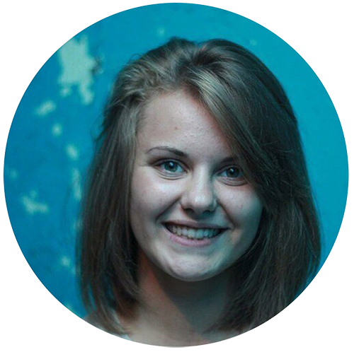
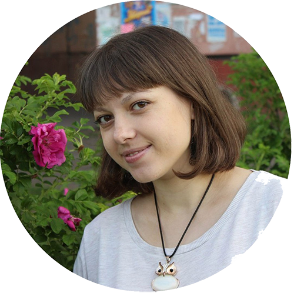

Мы — молодёжный центр города Шарыпово, и у нас есть имя — Информационное молодёжное агентство (ИМА). То есть ИМА и Молодёжный центр — это одно и то же. Занимаемся мы проведением мероприятий — крупных, таких как День молодёжи, Сибирский хоровод, и не очень, таких, как флешмобы, квартирники. Также наша забота — досуг молодёжи, а это различные тренировки, игры, образовательные семинары, деятельность по интересам.Все наши события происходят в рамках флагманских программ, по-русски сказать — направлений. Их вы и можете увидеть во вкладке меню с одноимённым названием «Наши направления».У нас всегда можно найти чем заняться, даже если в данный момент нет никаких мероприятий, ведь у нас есть специальное помещение, свободное пространство, оно же «Сгущёнка», где можно почитать наши книги, воспользоваться бесплатным WiFi, поделать уроки, или просто прийти посмотреть фильм с друзьями. Мы всегда рады тебе, приходи в наш уютный гостеприимный второй дом — Молодёжный центр «ИМА».
О нас
Наши специалисты
Марина Абузова
Директор молодёжного центра с 2013 года. По образованию педагог-организатор культурно - досуговой деятельности и психолог. В юности занималась танцами, добровольчеством и собой. Теперь занимается тем же, но ещё и нами.Любовь Мазур
Более 8 лет была волонтёром Молодёжного центра, а с 2013 года - сотрудник, сперва специалист по работе с молодёжью, ныне - методист. Курирует муниципальный штаб программы «Моя территория» (14 место в рейтинге по итогам 2016 года. В 2014 году муниципальный штаб был на 46 месте). С 2015 года курирует краевой инфраструктурный проект «Территория 2020» по развитию и реализации молодежных инициатив. В 2016 году стала обладателем Молодежной Премии Главы города Шарыпово. В свободное время занимается рукоделием и деятельностью в рамках Общественного движения "Автоканал Шарыпово"
Анна Лазуренко
Человек - оркестр. В прошлом волонтёр молодёжного центра, кавээнщица (команды "Статья" и "ВИП"). Являлась руководителем ДОО "Долг" и волонтёрского объедения "Феникс". Победитель премии "Успех года" номинация "Общественная деятельность". Отмечена благодарственными письмами Главы города Шарыпово, сертификатом, как лучший руководитель открытого пространства среди муниципальных территорий Красноярского края. Сейчас курирует программы "Беги за мной! Сибирь", "КВН", инфраструктурные проекты "Краслидер", "Открытые пространства", "Российское движение школьников", а ещё делает именные аксессуары из дерева для деток. Всем сердцем любит "молодёжку" и настоятельно рекомендует всем здесь побывать.
Дарья Ли
Приехала к нам из городов заморских, точнее, зауральских. Была и в Томске, и в Москве, но судьба шарыповца притянула её и пришила к нашей болотистой местности. Однако, болото её не засосало, а наоборот, выдавило из неё массу творческого потенциала и энергии на созидание.
Евгения Семякина

С 2006 года занималась волонтёрством. В 2008 году получила премию Главы города Шарыпово, за достижения в молодежной политике на территории города, и в этом же году стала сотрудником молодёжного центра. Занималась трудоустройством молодёжи, принимала участие в реализации различных проектов и грантов на территории нашего города. В настоящий момент занимается госзакупками и прочей товаро-оборотной деятельностью нашего центра.
Copyright 2017 IMA. All Rights Reserved